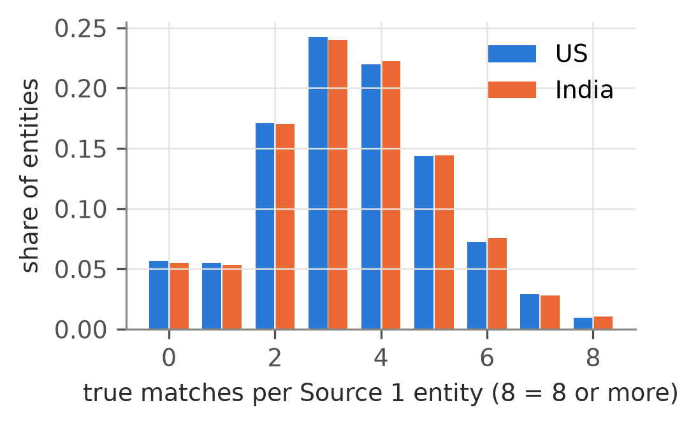
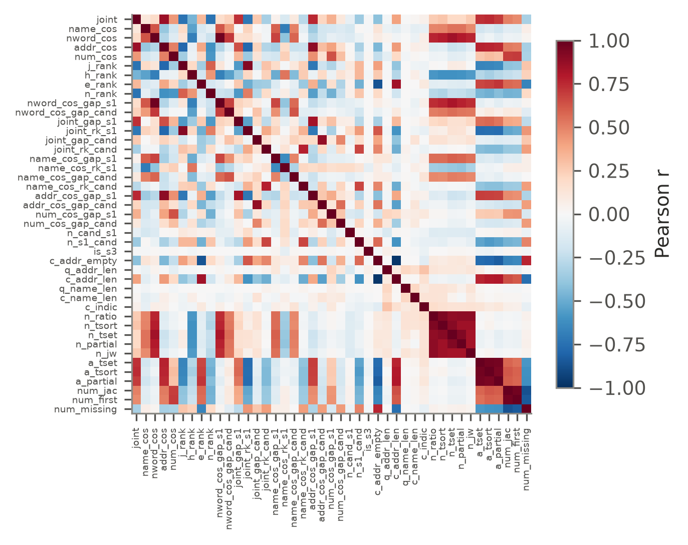
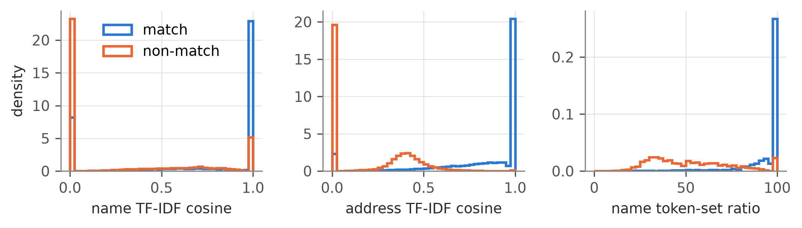
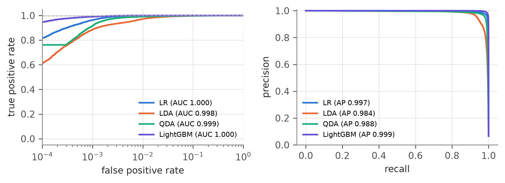
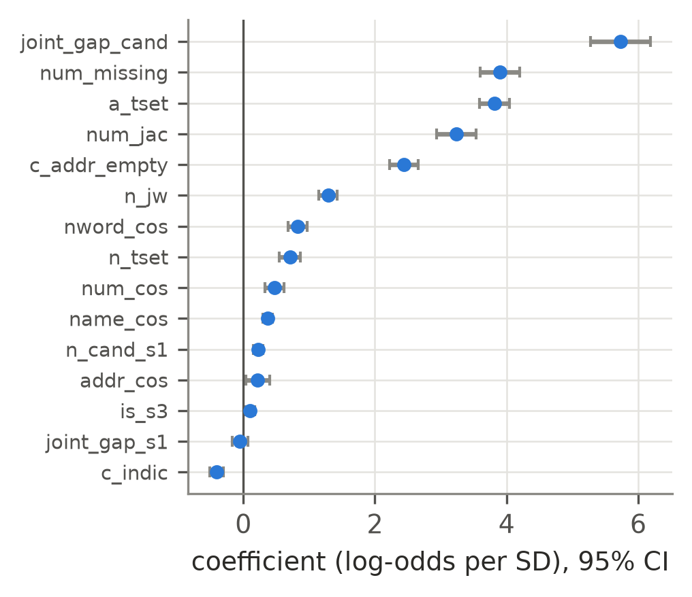
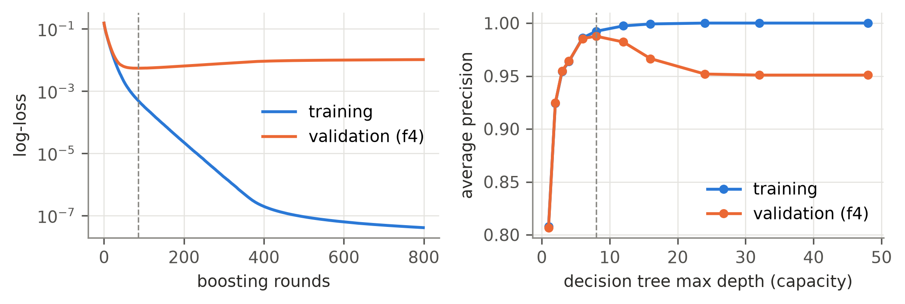

The task
Records of the same business arrive from three sources with different spellings, abbreviations, word order, Devanagari script and missing address parts, and they share no identifier. For every Source 1 record we predict which Source 2/3 records describe the same business. Data: Amazon ML Challenge 2026 (US and India).
This dashboard shows the course study, which uses a 5% stratified sample of the training data. The test set is the lockbox split, which was never used for training or tuning.
Pipeline
- Normalisation: lower-casing, transliteration of Devanagari, house-number extraction
- Blocking: TF-IDF cosine search narrows the pool to ~50 candidates per entity
- Pair features: 43 similarity, context and record features
- Classification: logistic regression, LDA, QDA, LightGBM predict P(match)
- Decision: per entity, accept the candidates that maximise expected F0.5
- Count models: Poisson, negative binomial, multinomial logit for the number of matches
Full challenge system (all data)
The same features in a two-stage LightGBM system, trained on all 1.76M development entities and submitted to the challenge.
Data quality by source and country



Challenge metric: entity-level macro F0.5 on the lockbox
Pair-level metrics on the lockbox

Hyperparameter tuning (5-fold grouped cross-validation)


How many matches does an entity have?
The match counts are under-dispersed: their variance is smaller than their mean, while a Poisson model assumes the two are equal. The negative binomial model can only add variance, so its dispersion parameter goes to zero and it gives the same fit as Poisson. Treating the count as a category (multinomial logit over 0/1/2/3+) is more accurate.
Match explorer
Pick a held-out Source 1 business from the lockbox. The table lists its candidates from blocking with each model's match probability, the candidates the expected-F0.5 rule accepts, and the true answer. The top 8 candidates of each model, every accepted candidate and every true match are shown.